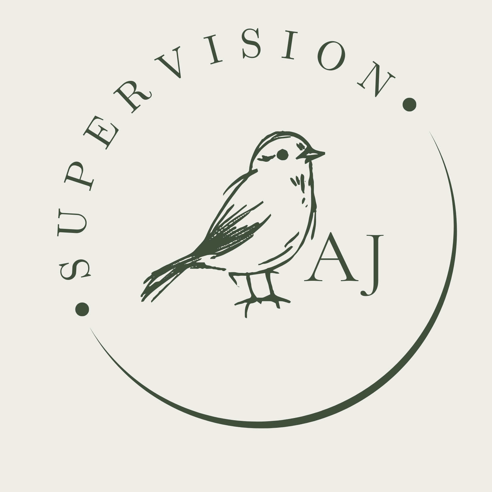

Andreas Janusewski · Systemischer SupervisorWer täglich für andere da ist, braucht selbst einen verlässlichen Rahmen. Ich begleite Fachkräfte, Teams und Leitungen in der Sozialen Arbeit – praxisnah, strukturiert und auf Augenhöhe.
Gute Supervision passt zum Menschen und zum Kontext. Deshalb gibt es unterschiedliche Formate – vom vertraulichen Einzelgespräch bis zur Begleitung ganzer Organisationen.
Supervision ist kein Luxus und kein Zeichen von Schwäche – sondern eines der wirksamsten Werkzeuge für professionelles Handeln in sozialen Berufen.
Sie schafft den Raum, der im Alltag fehlt: um innezuhalten, Zusammenhänge zu verstehen und mit mehr Klarheit in die Arbeit zurückzukehren. Für Einzelpersonen genauso wie für Teams und Organisationen.
Mehr erfahren„Supervision schafft den Raum, den der Alltag nicht lässt – und genau darin liegt ihre Stärke."
Soziale Arbeit, Pädagogik, Erzieher*innen, Beratung, Jugendhilfe, psychosoziale Einrichtungen
Führungspersonen, Koordinationsstellen und Verantwortliche in sozialen Einrichtungen
Teams, Träger und Organisationen im sozialen und pädagogischen Bereich
Nehmen Sie unverbindlich Kontakt auf – ich freue mich auf Ihre Anfrage und berate Sie gern zum passenden Format.